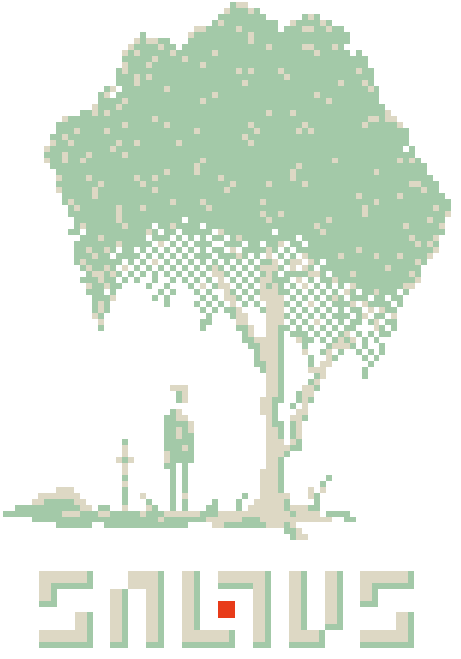

In a vast, dark forest, with the sword lying beside you the only clue to how you got here. Engraved in the hilt is a two-faced head with soulless eyes. What is this place? How did you get here? And can you escape? Only time will tell.